🎓 Presentation: Exploring the Central Limit Theorem through Simulations
🪄 Slide 1: Title Slide
Title: 📊 Exploring the Central Limit Theorem through Simulations
Subtitle: How sample means tend toward normality—no matter the original distribution.
🔍 Slide 2: What is the Central Limit Theorem?
Definition: The Central Limit Theorem (CLT) states that the sampling distribution of the sample mean tends toward a normal distribution as the sample size increases, regardless of the population's original distribution.
📌 Why is it important?
- Allows inference using normal distribution.
- Foundation for confidence intervals and hypothesis testing.
- Powers much of modern statistics.
🛠 Slide 3: Simulation Plan
What will we do?
-
Generate populations from various distributions:
-
Uniform
- Exponential
- Binomial
- Draw many random samples of sizes: 5, 10, 30, 50
- Compute sample means
- Visualize the sampling distribution
- Discuss how normality emerges as sample size grows
🐍 Slide 4: Python Setup (Code Block)
import numpy as np
import matplotlib.pyplot as plt
import seaborn as sns
sns.set(style='whitegrid')
💡 We use NumPy for data generation and Seaborn for visualization.
🧪 Slide 5: Sampling Function (Code Block)
def simulate_sampling_distribution(population_data, sample_sizes, num_samples=1000):
results = {}
for size in sample_sizes:
sample_means = []
for _ in range(num_samples):
sample = np.random.choice(population_data, size=size)
sample_means.append(np.mean(sample))
results[size] = sample_means
return results
Definition: Sampling Distribution: The distribution of means across repeated samples from the same population.
🔵 Slide 6: Uniform Distribution – Simulations
uniform_population = np.random.uniform(low=0, high=100, size=100000)
sample_sizes = [5, 10, 30, 50]
uniform_results = simulate_sampling_distribution(uniform_population, sample_sizes)
📘 Uniform Distribution: All values are equally likely.
📊 Slide 7: Uniform Distribution – Plots
Loop to generate histograms:
for size, means in uniform_results.items():
plt.figure(figsize=(8,4))
sns.histplot(means, bins=30, kde=True, color='skyblue')
plt.title(f'Uniform Distribution - Sample Size = {size}')
plt.xlabel('Sample Mean')
plt.ylabel('Frequency')
plt.show()
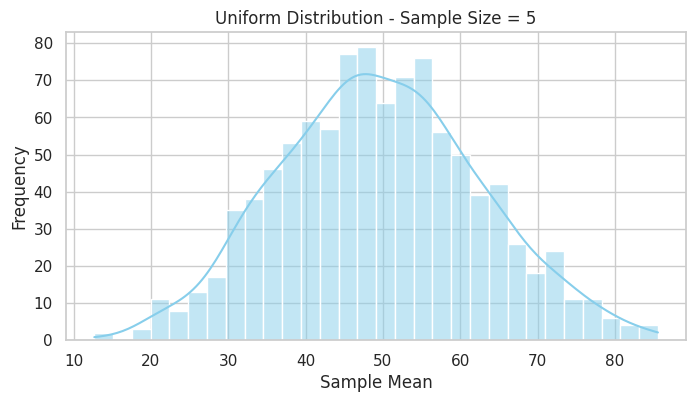 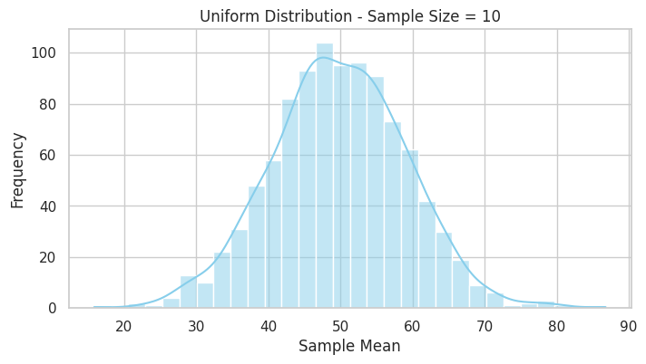 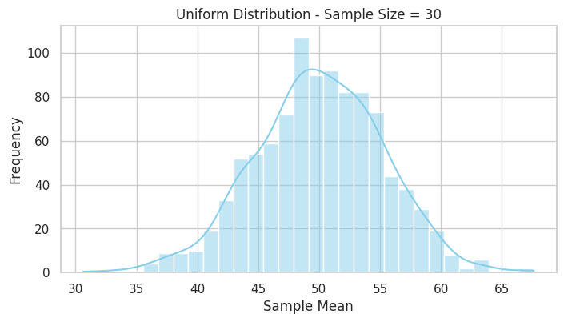 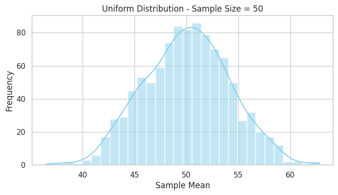
Observation: As sample size increases, the sampling distribution becomes more normal.
🔶 Slide 8: Exponential Distribution – Simulations
exponential_population = np.random.exponential(scale=1.0, size=100000)
exponential_results = simulate_sampling_distribution(exponential_population, sample_sizes)
📘 Exponential Distribution: A right-skewed distribution, often used to model time between events.
📊 Slide 9: Exponential Distribution – Plots
for size, means in exponential_results.items():
plt.figure(figsize=(8,4))
sns.histplot(means, bins=30, kde=True, color='orange')
plt.title(f'Exponential Distribution - Sample Size = {size}')
plt.xlabel('Sample Mean')
plt.ylabel('Frequency')
plt.show()
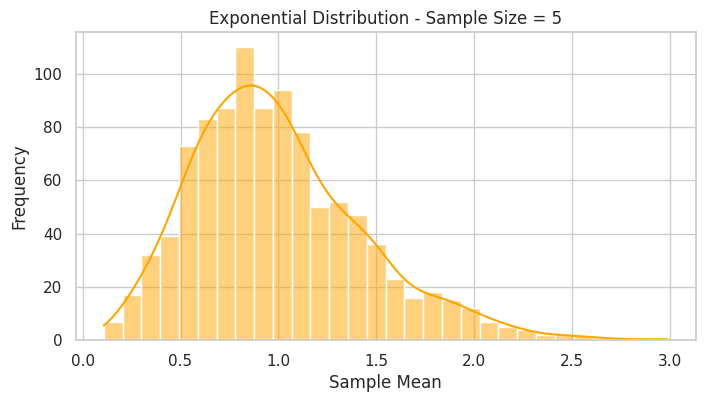 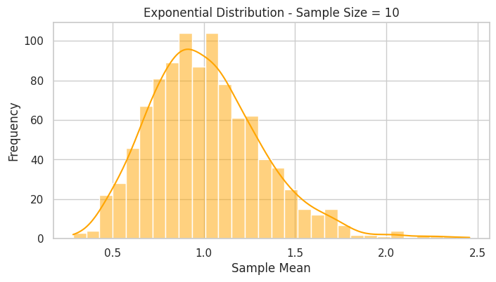 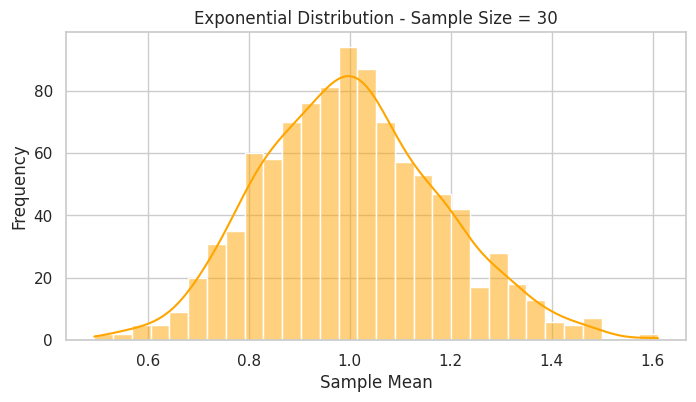 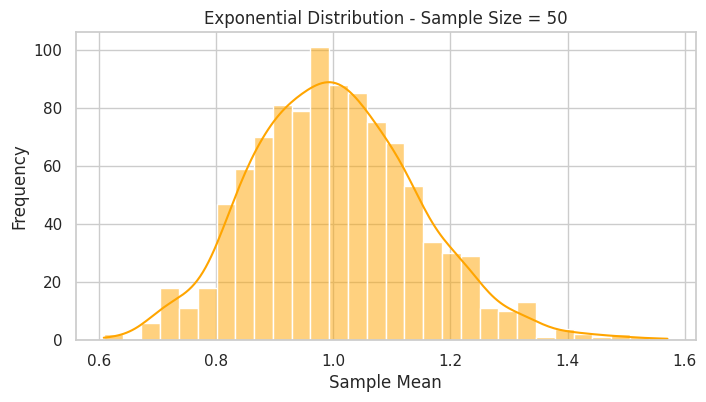 Observation: Skewed population, but sample means tend toward normality with larger sample size.
🟥 Slide 10: Binomial Distribution – Simulations
binomial_population = np.random.binomial(n=1, p=0.3, size=100000)
binomial_results = simulate_sampling_distribution(binomial_population, sample_sizes)
📘 Binomial Distribution: Discrete distribution showing number of successes in fixed trials with probability p.
📊 Slide 11: Binomial Distribution – Plots
for size, means in binomial_results.items():
plt.figure(figsize=(8,4))
sns.histplot(means, bins=30, kde=True, color='red')
plt.title(f'Binomial Distribution - Sample Size = {size}')
plt.xlabel('Sample Mean')
plt.ylabel('Frequency')
plt.show()
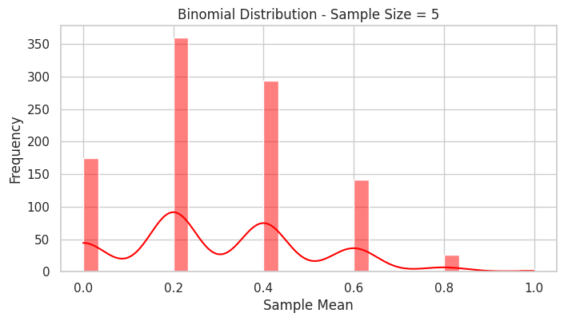
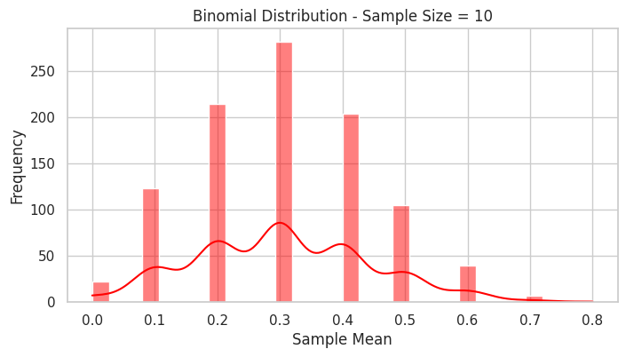
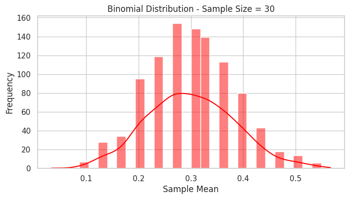
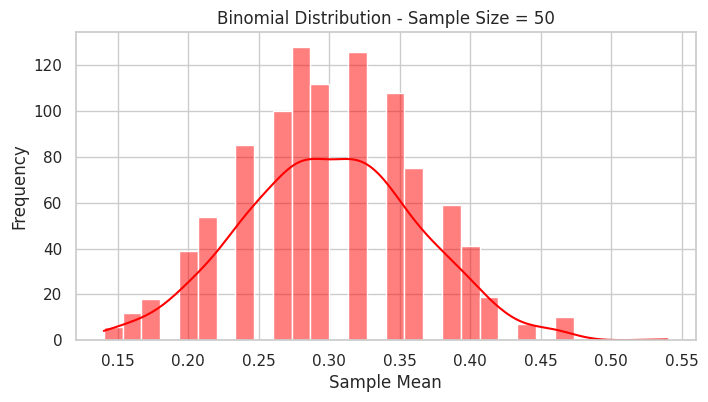 Observation: Even discrete distributions follow CLT.
📉 Slide 12: Variance of Sample Means
pop_var = np.var(uniform_population)
sizes = np.arange(1, 101)
variances = [pop_var / n for n in sizes]
plt.figure(figsize=(8,5))
plt.plot(sizes, variances, label='Var(X̄) = σ²/n', color='green')
plt.xlabel('Sample Size')
plt.ylabel('Variance of Sample Mean')
plt.title('Decrease in Variance of Sample Mean with Increasing n')
plt.legend()
plt.show()
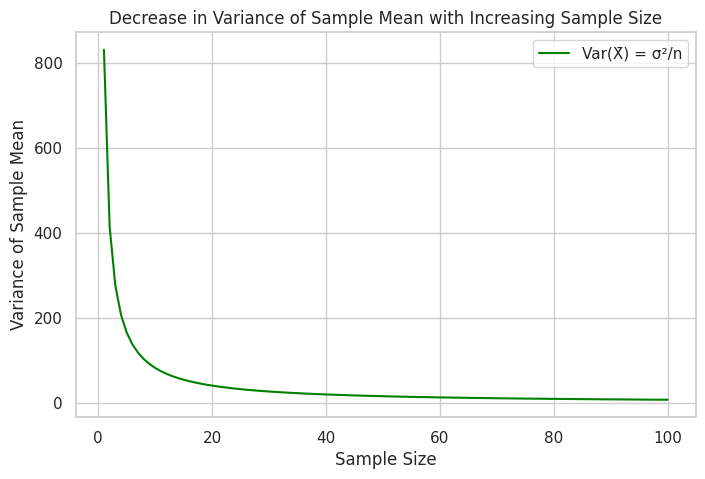
📘 Key Formula:
🌎 Slide 13: Real-World Applications
Where is CLT used?
- 📦 Quality control in manufacturing (Six Sigma)
- 💰 Financial modeling and risk management
- 🧪 Medical trials and drug testing
- 📊 A/B testing in web analytics
- 📈 Estimating population means in surveys
💬 Slide 14: Conclusion
- CLT explains why the normal distribution appears everywhere
- Works regardless of population distribution (with large enough samples)
- Simulations help visualize and internalize this key idea